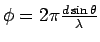
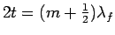
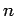

Next: About this document ...
Physics 232. Heat, Sound, and Light
Chapters covered in last third of class: 34.6,35,36,37,(38)
Sections skipped:
- Most of 34 (all but 34.6)
- 35.2,35.6,35.7,35.9.
- 36.5, 36.6, 36.7 (eye- a little), 36.8 (microscope - little),
36.9, 36.10 (telescope - little)
- 37.7
- 38.3-on
Equations for Final.
- 35.4
- Index of refraction:
- 35.7
- Wavelength in medium with index of refraction n:
- 35.8
- Snell's law:
- 36.1
- Magnification:
- 36.2
- Magnification for mirrors:

- 36.5
- Radius of curvature:
- 36.6
- Mirror equation (spherical mirrors):
- Table 36.1
- Sign conventions for spherical mirrors
- 36.8
- Spherical refracting surfaces:
- Table 36.2
- Sign conventions for refracting surfaces
- 36.15*
- Lens-makers equation:
- 36.16
- Thin lens equation:
- 36.-
- Magnification for Thin lenses:
- Table 36.3
- Sign conventions for thin lenses
- 36.17
- Two thin lenses in contact have net focal length:
- 37.1
- Path length difference, double slit:
- 37.2
- Constructive interference by double slit:
- 37.3
- Destructive intereference by double slit:
- 37.4
- Double slit pattern: the position of P on wall is
 above the central maximum, where
above the central maximum, where
- 37.8
- Double slit pattern: phase difference (in radians):

- 37.11
- Intensity of double slit pattern:
- 37.-
- Phasors: the E-field at point P for equally spaced slits:
- 37.-
- Phasor resultant's angle:
- 37.-
- Phasors: how to find : graphically add phasor vectors
(
)
- 37.-
- Phasors: ratio of intensities of primary to secondary maxima:
(Note: is equal to the intensity from a single
slit)
- 37.14
- Wavelength of light in thin film:
- 37.15
- Constructive interference by film in air:
 where
- 37.17
- Destructive interference by film in air:
where
- 37.-
- Constructive interference by film on high- surface:
where
- 37.-
- Destructive interference by film on high- surface:
where
- 38.1
- Single slit, condition for destructive interference:
where
- 38.4
- Intensity from single slit
where
.
Next: About this document ...
Jason Pinkney
2005-05-12